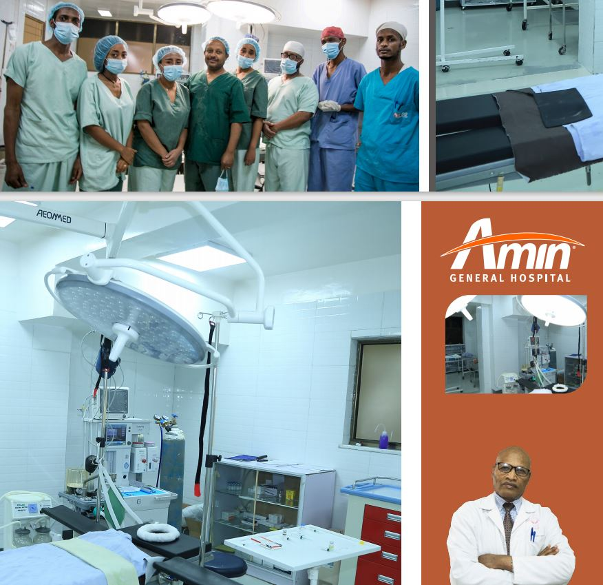
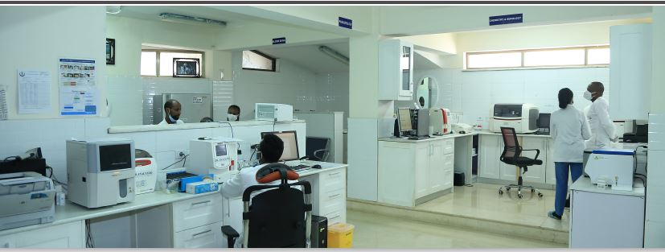
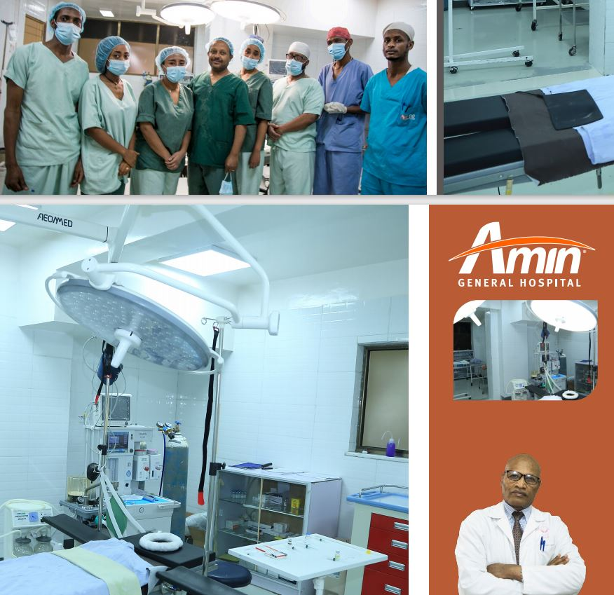
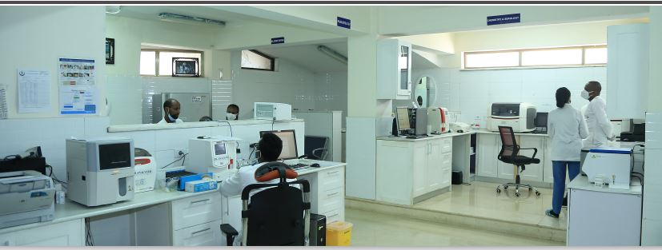

Amin General Hospital
Amin General Hospital provides 24 hours of medical services from Monday to Sunday for both in and outpatients. The hospital provides high-quality emergency services, organizing specialist with patient-focused care who are accessible and responsive.
Address
Abenet near CocaCola factory, Addis Ababa, Ethiopia
Map-
Outpatient services
Our Outpatient services are medical procedures or tests that can be done in a medical center without an overnight stay. Many procedures and tests can be done in a few hours.
-
modern Videoscopy, Endoscopy and Colonoscopy treatments
We offer modern Videoscopy, Endoscopy and Colonoscopy treatments. Amin General Hospital is the most trusted medical center for stomach, intestine, and abdominal treatment. You don't need to travel abroad to receive these treatments.
-
General Surgenry
The department of surgery is set up to provide up-to-date general surgical service and specialty surgical care. It has modern fully equipped operating theatre and recovery unit. Post-operative ICU care also available 24Hrs. The patient care and supervision is provided by experienced surgeons and trained, dedicated nursing staff. Safety and excellence is assured in every procedure.
-
NeuroSurgery
When you have a complex condition of the brain, spine or central nervous system, you need advanced care and a team of compassionate specialists. Amin General Hospital specialists offer comprehensive diagnostic and treatment options, including neuroimmunology treatments, neurosurgery and interventional neuroradiology, so you can get the care that best meets your needs.